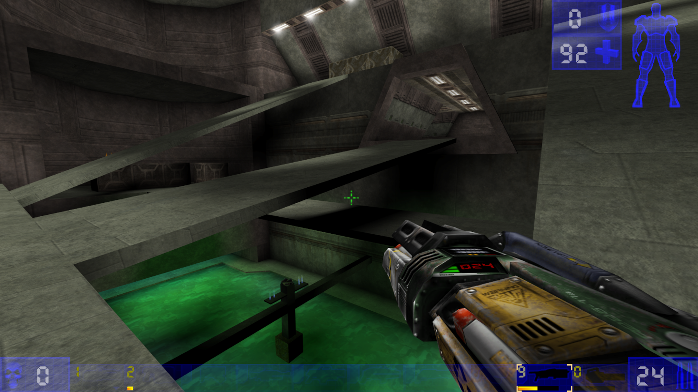
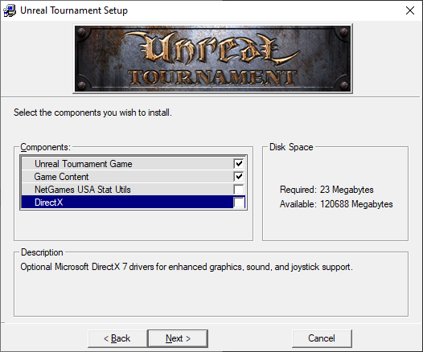

UT99 in 2020

Getting UT99 to run in 2020 is not a particularly huge issue but there are compatibility issues, version mismatch issues in netplay and a confusing amount of all-in-one packs/patches circulating around.
Ontop of that different sources of UT99 come in different forms that can cause interplay issues.
The goal of this guide is to get UT99 running without compatibility issues on modern systems as close to the original as possible, in the simplest, most minimal form.
!IMPORTANT! This guide comes with a short companion script that you can drop into the root of your UT99 installation and run, it will not modify your installation but instead check it for issues that are the subject of this guide and point you back to the guide about how to fix them. If you don't care about reading this guide in full, you can just run and follow the script until it reports no warnings/errors.
The script is a simple, well-documented batch file that even without much prior knowledge can be easily verified as safe to run and will run on practically every Windows version.
- 1.Basic Installation
- 2.Community Compatibility Fixes
- 3.Configuration
- 3.1.Disable vsync
- 3.2.Configuring Netspeed
- 3.3.Disable Automatic Downloads
- 3.4.Max out anti-aliasing and anisotropic filtering
- 4.Tips for Default Bindings
- 5.Tips & Tricks
1.Basic Installation
Different sources of UT99 differ in significant ways from each other, our first goal is to get a practically equivalent installation no matter where we get UT99 from.
Our target goal is a clean UT99 GOTY installation with the latest official patch (v436) and the exact same game contents.
At the time of this guide 3 different sources are known described below.
1.1.GOTY Disc Version
If you own the disc version you will own 1-2 discs.
!IMPORTANT! In case you own 2 discs, it is vital that you do not install the 2nd disc, it contains now 2 outdated versions of mods (ChaosUT and RocketArena), which you can grab in newer versions from their respective sources if you care about them, as well as the S3TC Texture Pack that causes significant issues in netplay.
Using the 2nd disc has been discouraged by the developers themselves and neither the later released GOG Version nor the Steam Version therefore contain its contents.
Instead, insert the 1st disc and run the Setup.exe contained therein.
The Installation process is largely self-describing until you reach the step
where it will ask you what Components to install.

In this step make sure to uncheck both the NetGames USA Stat Utils and
DirectX components.
The NetGames component was an online service that received gameplay stats from your client, it is not defunct and neither the GOG nor Steam Version ships with it.
The DirectX component is a DirectX 7 driver that you won't need on modern systems, especially because we will exchange the shipped DirectX ut99 video driver with a more modern version to fix compatibility issues.
From there on continue the installation until it succeeds.
Once installed update the installation to the latest official version 436, see here.
1.2.GOTY GOG Version
The GOG Version at the time of this guide already comes with a clean 436 installation that we can use as a basis.
Please continue here.
1.3.GOTY Steam Version
The Steam Version at the time of this guide claims to be a clean 436 installation but the UT99 executable has been altered towards ends that are undocumented.
Because there have been reports of netplay/compatibility issues with other UT99 clients, install the latest official 436 patch over your Steam installation.
After you have done so, your installation will be binary-equal to the GOG and updated disk version.
NOTE if VERIFY INTEGRITY OF GAME FILES... is run through Steam, the files will be reverted and need to be patched again, the attached companion script of this guide checks and warns you for this case
1.4.Shared Steps
1.4.1.Installing the latest official patch 436
The latest official patch is 436 which you can download here (checksums).
The installation is self-describing, make sure to set the correct path to your UT99 installation.
2.Community Compatibility Fixes
These come in the form of .dll files that fix compatibility issues you will
otherwise confront on more modern systems.
All the community fixes provide sources for you to verify for safety and build yourself.
2.1.Use updated D3d10 Video Driver
Why to do it:
- fixes crashes / increases stability
- improves input latency significantly
- enables higher resolutions, automatic-fov and anti-aliasing/anisotropic-filtering
Download the Direct3D 10 video driver from here (checksums) and unpack it (including the subdirectory it extracts) into your UT99\System directory.
NOTE If you care to build these from source yourself see here.
2.1.1.Changing the video driver
The initial steps of getting the video driver selection window depend on if you have started the game before or if this is a fresh installation.
2.1.1.1.Option 1: I have started the game before
- in the menu go to Options -> Preferences
- at the top next to Video Driver press the [Change] button
- confirm the preceding dialogue with Yes
- UT99 will now close and open a new Window where you can select the video driver
2.1.1.2.Option 2: I haven't started the game before
Merely start the game, the dialogue will appear by itself.
2.1.1.3.Navigating the video driver selection window
- check the Checkbox named Show all devices
- you will now spot a Direct3D 10 Support entry in the list, select it and confirm your selection by pressing the [Next >] button
- confirm your selection once again by pressing the preceding [Next >] button
- relaunch the game by pressing the [Run!] button
2.1.1.4.Finishing touches
After switching to the Direct3D 10 Driver start the game at least once so it will populate the UnrealTournament.ini (used for configuration) with defaults.
2.2.Use UT99Dinput
Why to do it:
- fixes forced mouse acceleration (affects all Windows versions > WinXP)
- fixes an out-of-place looking otherwise permanent bulky crosshair-cursor appearing and sticking around ingame after ALT+TABing
Get UT99Dinput (download) (checksum) and put the dinput.dll in your UT99\System directory.
In the menu ingame, make sure to enable the DirectInput setting found in the Controls Settings Tab.
3.Configuration
3.1.Disable vsync
Why to do it:
- improves input latency significantly
Using the Direct3D 10 driver, add/set the following lines below the
[D3D10Drv.D3D10RenderDevice]-section in UT99/System/UnrealTournament.ini,
replacing 60 with your current refresh rate supported by your monitor
(don't go higher than that)
VSync=False
FPSLimit=60
RefreshRate=60
3.2.Configuring Netspeed
Why to do it:
- fixes high-latency scenarios in Internet games
Add/set the following lines below the [Engine.Player]-section in UT99/System/UnrealTournament.ini
ConfiguredInternetSpeed=20000
3.3.Disable Automatic Downloads
Why to do it:
- indiscriminately downloading potentially harmful files from unknown servers is not a great idea safety wise
- doesn't mess up your local installation after playing netplay
By default connecting to an internet game indiscriminately downloads and installs archives. Disabling this improves safety and gives control over your installation back to you.
However you will not be able to connect to Servers that run non-standard mods/maps this way. This is still recommended as a default. Be cognizant once you allow downloads again to only connect to trusted ones.
Add/set the following lines below the [IpDrv.TcpNetDriver]-section in UT99/System/UnrealTournament.ini
AllowDownloads=False
3.4.Max out anti-aliasing and anisotropic filtering
Why to do it:
- improves visuals
Using the Direct3D 10 driver, add/set the following lines below the [D3D10Drv.D3D10RenderDevice]-section in UT99/System/UnrealTournament.ini
Antialiasing=16
Anisotropy=16
4.Tips for Default Bindings
Some of the Default Bindings can not be changed through the menu and have to
be set through the UT99/System/User.ini file.
Especially because some of these interfere with ALT+Tabing, they are added here for completion's sake and should be considered.
4.1.Freeing ALT+Tab
4.1.1.Freeing TAB
By default TAB binds an awful version of the console (a better one can be bound in the Input Menu via Preferences → Controls → Console → Console Key), this will cause you to open a sticky console every time you ALT+Tab that you have to exit via ESC before regaining ingame control.
To disable this simply free TAB by setting the corresponding line in UT99/System/User.ini
Tab=
4.1.2.Freeing ALT
By default the ALT key is bound to firing your weapon which can not be disabled ingame, this will cause you to shoot your weapon every time you ALT+Tab.
to disable this simply free Alt by setting the corresponding line in UT99/System/User.ini
Alt=
4.2.Show Scoreboard
By default F1 is bound to toggle the Scoreboard, which is harder to reach,
consider binding it to something more comfortably within reach via the
ShowScores Command in your UT99/System/User.ini e.g.:
C=ShowScores
NOTE There is no built-in way to show the Scoreboard only while holding down a key, some guides propose a workaround by using |-pipes but these work inconsistently, meaning in some cases the Scoreboard will not be hidden once you release your key again and become sticky, requiring you to fallback to the F1 key to toggle it off, for these reasons it is not recommended here.
5.Tips & Tricks
5.1.Installing .umod files
Drop this script into the root of your UT99
Installation and then drag and drop the .umod files you want to install onto
it.
This is relevant for installing mods and maps which are often distributed as
.umod files.